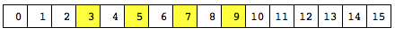

LLVM IR for the GenX backend¶
- Introduction
- LLVM IR representation of EU code
- Vector regions
- Predicates and predication
- Non-GenX intrinsics
- GenX intrinsics
- Region/element access intrinsics
- ALU type conversion intrinsics
- Modifier intrinsics
- Boolean reduction intrinsics
- SIMD control flow intrinsics
- ALU intrinsics
- add
llvm.genx.*add.sat: add instruction with saturation- addc
- asr
llvm.genx.*avg: integer averaging, no saturationllvm.genx.*avg.sat: integer averaging with saturationllvm.genx.*bfe: bitfield extractllvm.genx.bfi: bitfield insertllvm.genx.bfrev: reverse bitsllvm.genx.cbit: count set bits- cmp
llvm.genx.cos: cos instruction- div
llvm.genx.ieee.div: Divide, IEEE variantllvm.genx.dp2: dp2 instruction (dot product on groups of 4 elements)llvm.genx.dp3: dp3 instruction (dot product on groups of 3 elements)llvm.genx.dp4: dp4 instruction (dot product on groups of 4 elements)llvm.genx.dph: dph instruction (dot product homogenous)llvm.genx.exp: base 2 exponentllvm.genx.*fbh: find bit highllvm.genx.fbl: find bit lowllvm.genx.frc: fractional partllvm.genx.inv: reciprocalllvm.genx.line: linear equationllvm.genx.log: base 2 logarithmllvm.genx.lrp: linear interpolationllvm.genx.lzd: leading zero detectionllvm.genx.*mad: mad instruction, no saturationllvm.genx.*mad.sat: mad instruction with saturationllvm.genx.*max: max instructionllvm.genx.*min: min instruction- mod
- mul
llvm.genx.*mul: mul instruction, no saturationllvm.genx.*mul.sat: mul instruction with saturationllvm.genx.*mulh: mulh instruction, no saturation- not
- or
llvm.genx.pln: plane equationllvm.genx.pow: powerllvm.genx.rndd: round downllvm.genx.rnde: round to evenllvm.genx.rndu: round upllvm.genx.rndz: round to zerollvm.genx.rsqrt: reciprocal square rootllvm.genx.*sad2: two-wide sum of absolute differencesllvm.genx.*sad2add: two-wide sum of absolute differences and addllvm.genx.*sad2add.sat: two-wide sum of absolute differences and add, saturatedllvm.genx.*shl: shl instruction, no saturationllvm.genx.*shl.sat: shl instruction with saturation- shr
llvm.genx.sin: reciprocal square rootllvm.genx.sqrt: reciprocal square rootllvm.genx.ieee.sqrt: reciprocal square root, IEEE variant- subb
- xor
- vISA reserved register intrinsics
llvm.genx.thread.*: read thread ID registerllvm.genx.group.id.*: read group ID registerllvm.genx.timestamp: read vISA v11 (%timestamp)llvm.genx.r0: read vISA v12 (%r0)llvm.genx.sr0: read vISA v18 (%sr0)llvm.genx.get.color: read color value of the thread originllvm.genx.get.hwid: read hw_id valuellvm.genx.set.pause: set the pause register (v11.4)llvm.genx.dummy.mov: insert a dummy mov to v0
- Shared function intrinsics
llvm.genx.dword.atomic.*: dword atomic with binary operatorllvm.genx.dword.atomic.*: dword atomic with fmin/fmax operationllvm.genx.dword.atomic.*: dword atomic with inc/dec operationllvm.genx.dword.atomic.cmpxchg: vISA DWORD_ATOMIC CMPXCHG instructionllvm.genx.dword.atomic.fcmpwr: vISA DWORD_ATOMIC FCMPWR instructionllvm.genx.typed.atomic.*: atomic typed with binary operatorllvm.genx.typed.atomic.*: atomic typed with fmin/fmax operationllvm.genx.typed.atomic.*: atomic typed with inc/dec operationllvm.genx.typed.atomic.cmpxchg: vISA TYPED_ATOMIC CMPXCHG instructionllvm.genx.typed.atomic.fcmpwr: vISA TYPED_ATOMIC FCMPWR instructionllvm.genx.gather.orig: vISA GATHER instructionllvm.genx.gather.scaled: vISA GATHER_SCALED instructionllvm.genx.gather4.orig: vISA GATHER4 instructionllvm.genx.gather4.scaled: vISA GATHER4_SCALED instructionllvm.genx.gather4.typed: vISA GATHER4_TYPED instructionllvm.genx.media.ld: vISA MEDIA_LD instructionllvm.genx.media.st: vISA MEDIA_ST instructionllvm.genx.oword.ld*: oword load instructionllvm.genx.oword.st: vISA OWORD_ST instructionllvm.genx.scatter.orig: vISA SCATTER instructionllvm.genx.scatter.scaled: vISA SCATTER_SCALED instructionllvm.genx.scatter4.orig: vISA SCATTER4 instructionllvm.genx.scatter4.scaled: vISA SCATTER4_SCALED instructionllvm.genx.scatter4.typed: vISA SCATTER4_TYPED instructionllvm.genx.transpose.ld: vISA TRANSPOSE_LD instructionllvm.genx.untyped.atomic.*: vISA UNTYPED_ATOMIC with binary operatorllvm.genx.untyped.atomic.*: vISA UNTYPED_ATOMIC with inc/decllvm.genx.untyped.atomic.cmpxchg: vISA UNTYPED_ATOMIC CMPXCHG instructionllvm.genx.svm.block.ld*: vISA SVM BLOCK_LD instructionllvm.genx.svm.block.st: vISA SVM BLOCK_ST instructionllvm.genx.svm.gather: vISA SVM GATHER instructionllvm.genx.svm.gather4.scaled: vISA SVM GATHER4_SCALED instructionllvm.genx.svm.scatter: vISA SVM SCATTER instructionllvm.genx.svm.scatter4.scaled: vISA SVM SCATTER4_SCALED instructionllvm.genx.svm.atomic.*: vISA SVM_ATOMIC with binary operatorllvm.genx.svm.atomic.*: vISA SVM_ATOMIC with inc/decllvm.genx.svm.atomic.cmpxchg: vISA SVM_ATOMIC CMPXCHG instructionllvm.genx.svm.atomic.*: vISA SVM_ATOMIC with binary operatorllvm.genx.svm.atomic.fcmpwr: vISA SVM_ATOMIC FCMPWR instructionllvm.genx.load: vISA LOAD (sampler load) instructionllvm.genx.sample: vISA SAMPLE instructionllvm.genx.sample.unorm: vISA SAMPLE_UNORM instructionllvm.genx.3d.sample: vISA 3D_SAMPLE instructionllvm.genx.3d.load: vISA 3D_LOAD instructionllvm.genx.avs: vISA AVS instructionllvm.genx.barrier: vISA BARRIER instructionllvm.genx.sbarrier: vISA SBARRIER instructionllvm.genx.cache.flush: vISA CACHE_FLUSH instructionllvm.genx.fence: vISA FENCE instructionllvm.genx.wait: vISA WAIT instructionllvm.genx.yield: vISA YIELD instructionllvm.genx.raw.send: vISA RAW_SEND instructionllvm.genx.raw.send.noresult: vISA RAW_SEND instruction with no resultllvm.genx.raw.sends: vISA RAW_SENDS instructionllvm.genx.raw.sends.noresult: vISA RAW_SENDS instruction with no resultllvm.genx.va.convolve2dvISA VA 2d Convolve instructionllvm.genx.va.hdc.convolve2dvISA VA HDC 2d Convolve instructionllvm.genx.va.erodevISA VA Erode instructionllvm.genx.va.hdc.erodevISA VA HDC Erode instructionllvm.genx.va.dilatevISA VA Dilate instructionllvm.genx.va.hdc.dilatevISA VA HDC Dilate instructionllvm.genx.va.minmaxvISA MinMax instructionllvm.genx.va.minmax.filtervISA MinMax Filter instructionllvm.genx.va.hdc.minmax.filtervISA HDC MinMax Filter instructionllvm.genx.va.bool.centroidvISA Boolean Centroid instructionllvm.genx.va.centroidvISA Centroid instructionllvm.genx.va.1d.convolve.horizontalvISA 1d convolve horizontal instructionllvm.genx.va.hdc.1d.convolve.horizontalvISA HDC 1d convolve horizontal instructionllvm.genx.va.1d.convolve.verticalvISA 1d convolve vertical instructionllvm.genx.va.hdc.1d.convolve.verticalvISA HDC 1d convolve vertical instructionllvm.genx.va.1pixel.convolvevISA 1 Pixel Convolve instructionllvm.genx.va.hdc.1pixel.convolvevISA HDC 1 Pixel Convolve instructionllvm.genx.va.1pixel.convolve.1x1modevISA 1 Pixel Convolve (1x1 mode) instructionllvm.genx.va.lbp.creationvISA LBP Creation instructionllvm.genx.va.hdc.lbp.creationvISA HDC LBP Creation instructionllvm.genx.va.lbp.correlationvISA LBP Correlation instructionllvm.genx.va.hdc.lbp.correlationvISA HDC LBP Correlation instructionllvm.genx.va.correlation.searchvISA Correlation Search instructionllvm.genx.va.flood.fillvISA Flood Fill instruction
Introduction¶
The GenX backend accepts LLVM intermediate representation with certain restrictions, and with additional GenX-specific intrinsics.
LLVM IR representation of EU code¶
Whole thread representation¶
When using LLVM with the GenX backend, the LLVM IR represents execution on a whole EU thread. This is distinct from IGC and Beignet (the OpenCL compiler for the Intel open source driver), in which the LLVM IR represents just a single work item, and a later stage of the compiler after LLVM IR parallelizes that into simd4,8,16 or 32.
The GenX backend thus gives more flexibility for a client that needs full control over what is executed in the EU thread for one of these reasons:
- the compiler needs to expose that control in the language (like CM);
- the compiler wants to do some parallelization, but in a more flexible way (e.g. different SIMD width for different parts of the code). This could be done as an LLVM pass before reaching the GenX backend, or it could be done even before reaching LLVM;
- the compiler wants to expose “cross lane” functionality, where an algorithm can be executed in parallel within a single EU thread, but the separate lanes need to access each other’s data at some points.
Linkage¶
A kernel is represented by a function with dllexport linkage.
A non-kernel function is represented by a function with public linkage.
A subroutine is represented by a function with internal linkage. A subroutine
is allowed to be accessed from multiple kernels and non-kernel functions; the
GenX backend clones such a subroutine so it appears with each kernel and function
that uses it in the vISA.
No other linkage is supported.
Global variables are not supported. (The CM compiler has its own CMABI pass that works around this by passing such variable into and out of any subroutine that uses it.)
Kernel information¶
The genx.kernels named metadata node contains a metadata node for each kernel, containing:
- 0: reference to Function
- 1: kernel name
- 2: asm name
- 3: kernel argument kinds (i32 for each kernel argument)
- 4: slm size in bytes
- 5: kernel argument offsets (i32 for each kernel argument)
Types¶
Only fundamental types that correspond to Gen types are allowed:
- i1 for predicate
- i8 for b/ub
- i16 for w/uw
- half for hf
- i32 for d/ud
- float for f
- i64 for q/uq
- double for df
Arbitrary size vectors of these types are allowed.
Arithmetic/logic operator¶
There is no vector width restriction on operands and result of an arithmetic/logic operator.
Where the operands and result have the same type, and no saturation is
required, the corresponding LLVM IR instruction can be used, for example
add.
A floating point operation where saturation is required is represented by
the LLVM IR instruction followed by the llvm.genx.sat intrinsic.
For an integer operation, vISA allows the operands to have one type and the result to have a different type. This is represented by an intrinsic, typically with signed/unsigned variants and variants with saturation. Saturation cannot be represented by a separate intrinsic as for floating point, because the intermediate result in the EU’s ALU has one more bit than the execution size.
An intrinsic is also required where the operator does not have an LLVM IR
instruction equivalent, such as min.
Load and store¶
Load and store instructions are allowed only to load/store from/to a static alloca, i.e. ones that are removed by a mem2reg pass.
Vector regions¶
Introduction to region-based addressing¶
The Gen hardware, and thus vISA, provide the ability for a vector operand of an instruction to be a region within a register.
1D region¶
A 1D region has the following parameters:
- The execution size is the number of elements in the region. This is determined by the instruction in which the operand appears.
- The horizontal stride (sometimes called just the stride) is the number of elements to step between each element of the region. This is 1 for a contiguous region, but can take other values, including 0 (in a source operand only) to splat the same scalar value across the whole operand.
- The start index indicates which element within the register is the start of the region.
The stride must be a constant. The start index can be a variable (giving an indirect operand).
Here is a simple contiguous 1D region (yellow), with execution size 4, stride 1 and start index 3, in a register with 8 elements:

Here is a non-contiguous 1D region, with execution size 4, stride 2 and start index 3, in a register with 16 elements:
2D region¶
A 2D region has multiple rows where each row is a 1D region. It has the following parameters:
- The execution size is the number of elements in the region. This is determined by the instruction in which the operand appears.
- The vertical stride (or vstride) is the number of elements to step between the start of one row and the start of the next row. It can be 0 (in a source operand only) to repeat the same row multiple times.
- The width is the number of elements per row.
- The horizontal stride (or stride) is the number of elements to step between each element of the region within a row. This is 1 for a contiguous row, but can take other values, including 0 (in a source operand only) to splat the same scalar value across the whole row.
- The start index indicates which element within the register is the start of the region.
The vstride, width and stride must be a constant. The start index can be a scalar variable (giving an indirect operand) or a vector variable with an element per row of the region (giving a multi-indirect operand).
Here is a 2D region with contiguous rows, with:
- execution size 8 (the number of elements in the region)
- vstride 8 (the step between the start of one row (3) and the start of the next (11)
- width 4 (the number of elements in a row)
- stride 1 (the step between each element in a row)
- start index 3

Here is a 2D region with:
- execution size 9 (the number of elements in the region)
- vstride 7 (the step between the start of one row (8) and the start of the next (15)
- width 3 (the number of elements in a row)
- stride 3 (the step between each element in a row)
- start index 8
Notes¶
Some points that arise from these examples:
- The execution size must be a multiple of the width. Execution size divided by width is the number of rows in a 2D region. If the number of rows is 1, then it is a 1D region.
- Gen and vISA only support powers of two within certain limits for the region parameters other than start index. Also 2D regions are allowed only in a source operand. But source languages like CM using regions do not have these restrictions, and the compiler needs to allow for the more general case.
- The matrix representation shown in the last two examples is not a property of the register from/into which the region is read/written. Rather, it is a property of the region parameters. We show a matrix whose width is the vstride of the region. In the last example, the register is not even a multiple of vstride number of elements, so we have some left-over elements at the bottom.
Region access in LLVM IR¶
Region access is represented in LLVM IR by intrinsics with the same region parameters as above. The representation is close to the hardware capabilities, but:
- The vISA/hardware restrictions on the region parameters being powers of 2 within certain ranges are not initially imposed. The GenX backend includes a legalization pass that imposes these restrictions, and other gen-specific ones such as not being allowed to cross 2 GRF boundaries and not being allowed a 2D region as a destination, by splitting up region accesses.
- There is an extra parent width region parameter used for optimizations when the GenX backend collapses and legalizes region accesses.
- To make the parent width parameter effective when a variable start index is involved, a compiler frontend should compile a 2D region access as two separate accesses, one for the rows and one for the columns within the rows.
The restriction still needs to be imposed that the region is entirely contained within the vector it is being read from or written to, otherwise undefined behavior ensues at runtime.
Reading a region¶
Reading a region, that is extracting certain elements from a vector to make a
new smaller vector, is represented by the llvm.genx.rdregioni or
llvm.genx.rdregionf intrinsic. (There are integer and fp variants simply
because the tablegen language for declaring an overloaded intrinsic does not
allow an “any scalar or vector type”.
The operands to this intrinsic are:
- the vector being read from;
- vstride (ignored for a 1D region, that is width == execution size);
- width;
- stride;
- start index;
- parent width (see below).
The execution size is implied by the vector width of the return value of the intrinsic call.
The vstride, width and stride are expressed in elements. But the start index is expressed in bytes, as this is what the hardware does in the variable index case.
A read from the first example region from above:
is represented by the following LLVM IR (assuming the start index is constant, and the element type is i32):
%v1 = <8 x i32> something
%region1 = call <4 x i32> @llvm.genx.rdregioni.v4i32.v8i32(<8 x i32> %v1, i32 0, i32 4, i32 1, i16 12, i32 undef)
The vstride is set to 0, but is ignored because it is a 1D region.
The width is 4 (elements) and the stride is 1.
The start index is 12, but remember this is in bytes, so it means 3 elements. (The elements have type i32.)
A read from the fourth example region from above:
is represented by this LLVM IR (assuming constant start index and i32 element type):
%v2 = <30 x i32> something
%region2 = call <9 x i32> @llvm.genx.rdregioni.v9i32.v30i32(<30 x i32> %v2, i32 7, i32 3, i32 2, i16 32)
With:
- execution size 9 (the number of elements in the region)
- vstride 7 (the step between the start of one row (8) and the start of the next (15)
- width 3 (the number of elements in a row)
- stride 3 (the step between each element in a row)
- start index 32 bytes, which is 8 elements.
The diagram above shows the input vector %v2 as a matrix of width 7 with two elements left over in a partial row. This 7 is not a property of the input vector value, which is just a vector (LLVM IR does not represent matrices). Instead it is the vstride of the region we are reading.
Writing a region¶
Writing a region, that is inserting the elements of a vector into certain
positions of another vector, yielding a new value for the latter vector,
is represented by the llvm.genx.wrregioni or
llvm.genx.wrregionf intrinsic. (There are integer and fp variants simply
because the tablegen language for declaring an overloaded intrinsic does not
allow an “any scalar or vector type”.
In SSA, each value is defined exactly once. Since we are representing a vector value as an LLVM IR value, the only way of representing a write to a region, which is a partial write, is for the operation to take the old value of the vector as an input, and to return the updated value of the vector. It is then up to the GenX backend to ensure that the two values are allocated to the same register.
The operands to this intrinsic are:
- the “old value” of the vector being written into;
- the “new value”, that is, the vector or scalar value to write into the region;
- vstride;
- width;
- stride;
- start index;
- parent width (see below);
- mask.
The execution size is the vector width of the “new value” input. For a 1D region (width == execution size), vstride is ignored.
As above in llvm.genx.rdregion, the vstride, width and stride are expressed in elements, but the start index is expressed in bytes.
Using the same two example regions as above in llvm.genx.rdregion:
Writing the elements of %region3 into the region in %v3, generating a new value %v3.new is represented by:
%v3 = <8 x i32> something
%region3 = <4 x i32> something
%v3.new = call <8 x i32> @llvm.genx.wrregion.v8i32.v4i32.i1(<8 x i32> %v3, <4 x i32> %region3, i32 0, i32 4, i32 1, i16 12, i32 undef, i1 1)
The .v8i32.v4i32.i1 decoration on the intrinsic name arises from LLVM’s intrinsic overloading mechanism. The v8i32 is the type of the return value, and the v4i32 is the type of the value being written in to the region. The i1 is the type of the mask operand; see below.
The vstride is set to 0, but is ignored because it is a 1D region.
The width is 4 (elements) and the stride is 1.
The start index is 12, but remember this is in bytes, so it means 3 elements. (The elements have type i32.)
Writing the elements of %region4 into the region in %v4, generating a new value %v4.new is represented by:
%v4 = <30 x i32> something
%region4 = <9 x i32> something
%v4.new = call <30 x i32> @llvm.genx.wrregion.v30i32.v9i32.i1(<30 x i32> %v4, <9 x i32> %region4, i32 7, i32 3, i32 2, i16 32, i32 undef, i1 1)
With:
- execution size 9 (the number of elements in the region)
- vstride 7 (the step between the start of one row (8) and the start of the next (15)
- width 3 (the number of elements in a row)
- stride 3 (the step between each element in a row)
- start index 32 bytes, which is 8 elements.
The mask operand¶
The wrregion* intrinsics have an extra mask operand. This is used to control which elements in the region are actually written, for use in predication and SIMD control flow.
Most generally, the mask operand is a vector of i1 with the same vector width as the value being written in to the region, and it is variable. If any element of the mask is 0, the corresponding element of the value is not written in to the region, leaving that element unchanged.
The most common case, used when there is no predication, is that the mask is all ones. As a shorthand, this is represented by a single constant i1 value of 1, rather than the whole vector.
Single element region¶
A single element could be a scalar value or a 1-vector. It is convenient to allow both in LLVM IR, because CM allows both as distinct types.
The rdregion and wrregion intrinsics are defined such that a single element region can be represented as either a scalar or a 1-vector. However, for the scalar case, it is recommended to use the LLVM IR instructions extractelement and insertelement instead, as core LLVM optimizations understand them.
The parent width operand¶
For a 2D region, certain parts of the GenX backend can optimize better if it is known that a row of the region cannot cross certain boundaries:
- Collapsing two 2D regions is possible only if it is known that a row of the inner 2D region cannot cross a row boundary of the outer 2D region.
- Knowing that a row of a 2D region cannot cross a GRF boundary can help to avoid splitting it up so much in legalization.
For a region with a constant start index, this can all be calculated from the start index and region parameters. For a region with a variable start index, the parent width operand is set to value N to make a statement that the semantics of the language being compiled say that a row of the region cannot cross a multiple of N boundary.
Predicates and predication¶
Certain vector operations can be predicated, that is, a vector of i1 predicate controls whether the corresponding element of the operation is written into its result element.
LLVM IR already has select with a vector condition.
As outlined above, the wrregion intrinsics have a mask operand. If a bit is not set in the mask, then the corresponding element of the “new value” input is not written into the result.
The intrinsics corresponding to predicated send messages (e.g. gather), and the raw send intrinsics, have a predicate operand.
Non-GenX intrinsics¶
In general the GenX backend does not implement non-GenX intrinsics, with the following exceptions:
llvm.uadd.with.overflow– the GenX backend does not implement the other arithmetic-with-overflow intrinsics, but I found a case where LLVM was transforming a CM program to use this one, so I had to implement it.llvm.fma– this intrinsic is generated in the GenXPatternMatch pass, but I think the GenX backend would be able to cope with it being in the IR already.
GenX intrinsics¶
Region/element access intrinsics¶
llvm.genx.rdregion* : read a region, direct or single-indirect¶
llvm.genx.rdregioni: integer element type (not i1)llvm.genx.rdregionf: fp element type- arg0: vector to read region out of
- arg1: i32 vstride in elements, constant
- arg2: i32 width in elements, constant
- arg3: i32 stride in elements, constant
- arg4: i16 or vXi16 offset in bytes
- arg5: i32 parent width, constant, ignored if offset is constant
- Return value: the region extracted
The return type must be a vector with the same element type as the input vector, and number of elements giving the total size of the region. A scalar can be used instead of a 1-vector.
There are two variants, an integer one and an fp one, because the intrinsic declaration language does not let us declare the return type as any scalar or vector int or fp type.
The element type must be an integral power of two number of bytes up to and including 8 bytes in size, thus one of i8, i16, i32, i64, half, float, double. In particular i1 is not allowed. The width must be non-zero and must divide the total size evenly.
There is no requirement on vstride, width, stride or total size being a power of two or having any maximum.
The offset in bytes arg can be i16 or vector of i16. If a vector, then its vector width must be the height of the region, i.e. the total size of the region divided by the width.
The parent width arg is ignored if the offset arg is constant. If the offset arg is variable, then a non-undef parent width is a statement that the value of offset is such that a row of the region does not cross a multiple of parent width boundary. This is used by the backend to determine whether the region can be collapsed into another region.
llvm.genx.wrregion* : write a region, direct or single-indirect¶
llvm.genx.wrregioni: integer element type (not i1)llvm.genx.wrregionf: fp element type- arg0: vector to write region in to
- arg1: subvector or scalar to write into the region
- arg2: i32 vstride in elements, constant
- arg3: i32 width in elements, constant
- arg4: i32 stride in elements, constant
- arg5: i16 or vXi16 offset in bytes
- arg6: i32 parent width, constant, ignored if offset is constant
- arg7: vector of i1 mask, or scalar i1
- Return value: the updated vector with the region modified
The return type must be a vector with the same type as the arg0 vector. The arg1 subvector must have the same element type as the arg0 vector and be no larger. Arg1 can be a scalar if the number of elements in the subregion is 1.
There are two variants, an integer one and an fp one, because the intrinsic declaration language does not let us declare the arg1 type as any scalar or vector int or fp type.
The element type must be an integral power of two number of bytes up to and including 8 bytes in size, thus one of i8, i16, i32, i64, half, float, double. In particular i1 is not allowed. The width must be non-zero and must divide the total size evenly.
The arg7 mask is a vector of booleans, exactly as wide as the arg1 subvector, such that an element of the subvector is written into its place in the vector only if the corresponding element of the mask is true. Alternatively, arg7 can be a single i1 constant with value 1, meaning that the wrregion is unconditional.
There is no requirement on vstride, width, stride or total size being a power of two or having any maximum.
The offset in bytes arg can be i16 or vector of i16. If a vector, then its vector width must be the height of the region, i.e. the total size of the region divided by the width.
After lowering, the arg1 subvector to write can be a scalar of the same type as an element of arg0, indicating that the region has one element. (Lowering lowers an insertelement to this type of wrregion.)
The parent width arg is ignored if the offset arg is constant. If the offset arg is variable, then a non-undef parent width is a statement that the value of offset is such that a row of the region does not cross a multiple of parent width boundary. This is used by the backend to determine whether the region can be collapsed into another region.
llvm.genx.vstore : store a vector value into memory¶
This intrinsic has the exact semantics of an llvm store instruction. It is designed for reading and writing a pass-by-reference argument and it stops llvm optimizations from optimizing away accesses to the pass-by-reference arguments.
- arg0: the memory to be accessed
llvm.genx.vload : load a vector value from memory¶
This intrinsic has the exact semantics of an llvm load instruction. It is designed for reading and writing a pass-by-reference argument and it stops llvm optimizations from optimizing away accesses to the pass-by-reference arguments.
- arg0: the memory to be accessed
- Return value: the vector value read
ALU type conversion intrinsics¶
llvm.genx.fptosi.sat : convert floating point to signed integer with saturate¶
- arg0: value to saturate, any scalar or vector floating point type
- Return value: converted value, any scalar or vector integer type
- (treated as signed) with same vector width as arg0
llvm.genx.fptoui.sat : convert floating point to unsigned integer with saturate¶
- arg0: value to saturate, any scalar or vector floating point type
- Return value: converted value, any scalar or vector integer type
- (treated as unsigned) with same vector width as arg0
llvm.genx.sat : floating point saturate¶
- arg0: value to saturate, any scalar or vector floating point type
- Return value: saturated value, same type as arg0
We represent floating point saturation by simply calling this intrinsic on the result of a floating point operation. This works because the value before saturation fits in the same type.
We do not have an equivalent for integer saturation, because the before-saturation value needs a bigger integer type than the result. Instead, any integer operation that supports saturation needs an intrinsic for the saturating variant.
llvm.genx.*trunc.sat : integer truncation with saturation¶
llvm.genx.sstrunc.sat: signed result, signed operandllvm.genx.sutrunc.sat: signed result, unsigned operandllvm.genx.ustrunc.sat: unsigned result, signed operandllvm.genx.uutrunc.sat: unsigned result, unsigned operand- arg0: value to truncate, any scalar or vector integer type
- Return value: truncated value, any scalar or vector integer type
- with same vector width as arg0
Modifier intrinsics¶
Abs is the only source modifier that is represented by an intrinsic; neg(x) uses 0-x, and not(x) uses x^-1.
llvm.genx.abs* : take absolute value¶
llvm.genx.absf: abs modifier for fpllvm.genx.absi: abs modifier for integer- arg0: input value, scalar/vector
- Return value: result, same type
Boolean reduction intrinsics¶
llvm.genx.all : true if all input elements are true¶
- arg0: input value: v*i1
- Return value: i1 result
llvm.genx.any : true if any input element is true¶
- arg0: input value: v*i1
- Return value: i1 result
SIMD control flow intrinsics¶
goto and join instructions are represented by llvm.genx.simdcf.goto
and llvm.genx.simdcf.join intrinsics.
The BSpec model¶
The BSpec defines SIMD control flow in terms of each of the 32 channels having a PcIP (per-channel instruction pointer), which determines where a disabled channel will be re-enabled:
A goto has two targets, UIP (update IP) and JIP (join IP).
A (forward) goto evaluates its vector condition, and, for each channel that is enabled and the condition is true, it sets the channel’s PcIP to UIP, to mark that the channel is disabled until execution reaches the join instruction at UIP. If, after disabling channels in this way, no channels are left enabled, then execution jumps to JIP.
UIP and JIP may be different, as there may be channels already disabled from an earlier goto with their PcIPs set to an earlier point than the present goto’s UIP. So JIP needs to be set to the earliest point that a channel could have its PcIP pointing at.
There is also a backward goto variant for use in a conditional loop back edge (end of a do..while loop). It works the same as a forward goto over an unconditional jump back to the top of the loop.
A join has one target, JIP. It reenables all channels that have PcIP set to this join. If there are still no channels enabled, it jumps to JIP.
Each instruction’s register write-back is gated by which channels are enabled, unless the instruction has a nomask bit set. This is in addition to optionally being gated by a predicate.
The action of the channel enable mask (and predicate) in a send depends on the shared function. Some (e.g. gather and scatter) have the expected semantics where disabled channels do not participate in the memory read/write, and (in the case of a read) do not update that channel’s result.
This scheme allows arbitrarily unstructured SIMD control flow. For it to work and guarantee convergence, it is sufficient (not sure if it is necessary) for there to be a linear chain of join points, and each goto/join’s UIP and JIP are forward in the chain, and JIPs are set correctly so it is not possible for execution to “miss out” a join point where a channel should have been enabled. (As above, a backward goto is handled in this model by being considered a forward goto over a backward unconditional jump.)
In Gen code, this linear chain of join points does not actually have to be in program order, as long as the join point order with forward UIP and JIP is derivable.
In vISA, the linear chain of join points does have to be in program order. vISA does not encode the JIP of a goto/join; instead it derives it itself. Also, vISA uses whether a goto’s target is before or after to encode whether it is a conditional loop backedge branch.
The LLVM IR model¶
The model we use in LLVM IR is very similar to the above.
The PcIP (per-channel instruction pointer) is replaced by:
- a global (in the function) EM (execution mask), with each channel having a bit that is 1 when the channel is enabled;
- each join point has a RM (resume mask), with each channel having a bit that is 1 if the channel is disabled and due to be re-enabled when execution reaches that join point.
A goto is represented by the llvm.genx.simdcf.goto intrinsic. Its
inputs are the current EM value, the current RM value for its UIP, and the
vector condition. Its results are the updated EM value, the updated RM
value for its UIP, and a scalar bool that says whether all channels are now
disabled and execution should branch to the JIP. This last result is then
(usually) used in a standard LLVM conditional br instruction.
A goto is implicitly attached to its UIP join by the input and output RM values being part of a web of RM values connected by goto and phi nodes and used in that join.
A join is represented by the llvm.genx.simdcf.join intrinsic. Its
inputs are the current EM value and the current RM value for this join.
Its results are the updated EM value (this join’s RM value is now effectively
all zeros so it not returned as a result), and a scalar bool that says whether
all channels are still disabled and execution should branch to the JIP.
This last result is then (optionally) used in a standard LLVM conditional
br instruction.
An instruction’s register write-back being gated by which channels are enabled is modeled by the current EM value (or the appropriate size left slice of it) being used as the predicate in a select or wrregion or shared function intrinsic.
Note that EM is always 32 bit, but a join’s RM may be smaller as it has the same vector width as the condition on all gotos that update it.
This model is equivalent to the BSpec model, as long as:
- there is only ever one EM value live at a time with an initial value in a function of either all ones or the passed in call mask;
- for each join point, there is only ever one RM value live at a time with an initial value in a function of all zeros, and a value after the join point of all zeros;
- it is possible to re-order the code such that the “false” target of a conditional branch that a goto or join is attached to is fall-through, and all JIPs and UIPs are forward.
Like any other variable with multiple values transformed to SSA, different EM values may be joined with a phi node. Similarly, for a particular join point’s RM, different RM values may be joined with a phi node.
The llvm.genx.simdcf.goto and llvm.genx.simdcf.join intrinsics can
only be generated to goto and join instructions if the GenX backend
deems them to be used in a way that is equivalent to the BSpec model. Otherwise,
they are lowered to equivalent but slower code that implements the semantics
of the spec of the intrinsics below.
There are more detailed requirements on the use of these intrinsics to be able
to generate them to goto and join instructions documented in the
GenXSimdCFConformance pass.
llvm.genx.simdcf.goto : goto instruction¶
- arg0: OldEM (old execution mask): v32i1
- arg1: OldRM (old resume mask): vector of i1
- arg2: SimdCond (the SIMD control flow condition): same type as arg1
Return value: struct with the following elements:
- ret0: NewEM (updated execution mask): v32i1
- ret1: NewRM (updated resume mask): same type as arg1
- ret2: BranchCond: i1
The elements of the returned struct are calculated as follows:
- NewEM = OldEM & (SimdCond one extended to v16i1)
- NewRM = OldRM | (OldEM & ~(SimdCond & (OldEM truncated to size of SimdCond)))
- BranchCond = !any(NewEM truncated to size of SimdCond)
llvm.genx.simdcf.goto represents a Gen goto instruction, taking a
vector condition, modifying the global EM and the UIP’s RM, and
resulting in a scalar condition to be used in a conditional branch whose
“true” successor is the goto’s JIP.
If the BranchCond result is not used, then the goto’s JIP is set to the join immediately after.
If the BranchCond result is used in a conditional branch, and JIP is later than the earliest join point where a channel would be re-enabled, then it is undefined whether the resulting goto instruction’s JIP is as specified here, or an earlier join point. (This rule is to allow for the vISA finalizer re-deriving the JIPs.)
If the goto intrinsic’s conditional branch simply branches over an empty block
with an unconditional branch, then the GenX backend takes the intrinsic and
the two branches to be a do..while back edge, giving a Gen goto
instruction with BranchCtrl=1, UIP set to the successor of the unconditional
branch (the top of the do..while loop), and JIP set to the following join
instruction.
Channels already disabled in EM remain disabled. For enabled channels, any channel whose element in SimdCond is true becomes disabled in EM, and the corresponding bit in RM is set such that the channel becomes re-enabled upon reaching the RM’s join point. If all channels in EM are then disabled, then BranchCond is true and the conditional branch in which it is used branches to the next join point in sequence.
Note that SimdCond has the same sense as in the Gen goto instruction, but the opposite sense to that in a vISA forward goto instruction.
llvm.genx.simdcf.join : join instruction¶
- arg0: OldEM (old execution mask): v32i1
- arg1: RM (resume mask): vector of i1
Return value: struct with the following elements:
- ret0: NewEM (updated execution mask): v32i1
- ret1: BranchCond: i1
The elements of the returned struct are calculated as follows:
- NewEM = OldEM | (RM zero extended to v32i1)
- BranchCond = !any(NewEM truncated to size of RM)
This is marked as having side effects to stop LLVM removing an otherwise unused join at an outer endif.
llvm.genx.simdcf.join represents a Gen join instruction, using the join
point’s RM, modifying the global EM, and resulting in a scalar condition to
be used (optionally) in a conditional branch whose “true” successor is
the join’s JIP.
If the BranchCond result is not used, then the join’s JIP is undefined; this case is used when it is known that at least one channel is enabled after the join so JIP will never be used.
If the BranchCond result is used in a conditional branch, and JIP is later than the earliest join point where a channel would be re-enabled, then it is undefined whether the resulting goto instruction’s JIP is as specified here, or an earlier join point. (This rule is to allow for the vISA finalizer re-deriving the JIPs.)
Note that vISA does not have a join instruction; the vISA finalizer recovers the join points from the goto instructions assuming a linear order.
Channels with a set bit in RM become enabled in EM. If all channels in EM are still disabled, then BranchCond is true and the conditional branch in which it is used branches to the next join point in sequence.
ALU intrinsics¶
add¶
Non-saturating add intrinsic is not needed. A vISA non-saturating add where the result type is different to the operand type is represented by trunc/zext/sext of each operand and then an LLVM IR Add instruction.
llvm.genx.*add.sat : add instruction with saturation¶
llvm.genx.ssadd.sat: result signed, operands signedllvm.genx.suadd.sat: result signed, operands unsignedllvm.genx.usadd.sat: result unsigned, operands signedllvm.genx.uuadd.sat: result unsigned, operands unsigned- arg0: first input, any scalar/vector integer type, even i64
- arg1: second input, same type as arg0
- Return value: result, any scalar or vector integer type with same
- vector width
For an fp add, use the LLVM IR FAdd instruction, followed by llvm.genx.sat if saturation is required.
asr¶
asr intrinsic is not needed. Because asr cannot overflow, an asr that saturates with a smaller result type than the execution type can be represented by an LLVM IR Asr instruction then an llvm.genx.sstrunc.sat.
llvm.genx.*avg : integer averaging, no saturation¶
llvm.genx.ssavg: result signed, operands signedllvm.genx.suavg: result signed, operands unsignedllvm.genx.usavg: result unsigned, operands signedllvm.genx.uuavg: result unsigned, operands unsigned- arg0: first input, any scalar/vector integer type (not i64)
- arg1: second input, same type as arg0
- Return value: result, any scalar/vector integer type (not i64)
- with same vector width
llvm.genx.*avg.sat : integer averaging with saturation¶
llvm.genx.ssavg.sat: result signed, operands signedllvm.genx.suavg.sat: result signed, operands unsignedllvm.genx.usavg.sat: result unsigned, operands signedllvm.genx.uuavg.sat: result unsigned, operands unsigned- arg0: first input, any scalar/vector integer type (not i64)
- arg1: second input, same type as arg0
- Return value: result, any scalar/vector integer type (not i64)
- with same vector width
llvm.genx.*bfe : bitfield extract¶
llvm.genx.sbfe: bitfield extract, signed resultllvm.genx.ubfe: bitfield extract, unsigned result- arg0: first input, any scalar/vector i32 type
- arg1: second input, same type as arg0
- arg2: third input, same type as arg0
- Return value: result, same type as arg0
llvm.genx.bfi : bitfield insert¶
- arg0: first input, any scalar/vector i32 type
- arg1: second input, same type as arg0
- arg2: third input, same type as arg0
- arg3: fourth input, same type as arg0
- Return value: result, same type as arg0
llvm.genx.bfrev : reverse bits¶
- arg0: first input, any scalar/vector i32 type
- Return value: result, same type as arg0
llvm.genx.cbit : count set bits¶
- arg0: first input, any scalar/vector integer type
- Return value: result, int32 of same width as arg0
llvm.genx.cos : cos instruction¶
- arg0: input value, any scalar/vector half/float type
- Return value: result, same type
llvm.genx.ieee.div : Divide, IEEE variant¶
- arg0: first input, any scalar/vector float/double type
- arg1: second input, same type
- Return value: result, same type
llvm.genx.dp2 : dp2 instruction (dot product on groups of 4 elements)¶
- arg0: first input value, any vector float with a multiple of 4 elements
- arg1: second input value, same type as arg0
- Return value: result, same type
llvm.genx.dp3 : dp3 instruction (dot product on groups of 3 elements)¶
- arg0: first input value, any vector float with a multiple of 4 elements
- arg1: second input value, same type as arg0
- Return value: result, same type
llvm.genx.dp4 : dp4 instruction (dot product on groups of 4 elements)¶
- arg0: first input value, any vector float with a multiple of 4 elements
- arg1: second input value, same type as arg0
- Return value: result, same type
llvm.genx.dph : dph instruction (dot product homogenous)¶
- arg0: first input value, any vector float with a multiple of 4 elements
- arg1: second input value, same type as arg0
- Return value: result, same type
llvm.genx.exp : base 2 exponent¶
- arg0: input value, any scalar/vector half/float type
- Return value: result, same type
llvm.genx.*fbh : find bit high¶
llvm.genx.sfbh: find bit high, signed operandllvm.genx.ufbh: find bit high, unsigned operand- arg0: input value, any scalar/vector i32 type
- Return value: result, same type
llvm.genx.fbl : find bit low¶
- arg0: input value, any scalar/vector i32 type
- Return value: result, same type
llvm.genx.frc : fractional part¶
- arg0: input value, any scalar/vector float type
- Return value: result, same type
llvm.genx.inv : reciprocal¶
- arg0: input value, any scalar/vector half/float type
- Return value: result, same type
llvm.genx.line : linear equation¶
- arg0: first input value, vector float with exactly 4 elements
- arg1: second input value, vector float with a multiple of 4 elements
- Return value: result, same type as arg1
llvm.genx.log : base 2 logarithm¶
- arg0: input value, any scalar/vector half/float type
- Return value: result, same type
llvm.genx.lrp : linear interpolation¶
- arg0: first input value, any vector float with a multiple of 4 elements
- arg1: second input value, same type as arg0
- arg2: third input value, same type as arg0
- Return value: result, same type
llvm.genx.lzd : leading zero detection¶
- arg0: input value, any scalar/vector i32 type
- Return value: result, same type
llvm.genx.*mad : mad instruction, no saturation¶
llvm.genx.ssmad: result signed, operands signedllvm.genx.sumad: result signed, operands unsignedllvm.genx.usmad: result unsigned, operands signedllvm.genx.uumad: result unsigned, operands unsigned
result := arg0 * arg1 + arg2
- Return value: result, any scalar or vector integer type with same
- vector width
- arg0: first input, any scalar/vector integer type (not i64)
- arg1: second input, same type as arg0
- arg2: third input, same type as result
llvm.genx.*mad.sat : mad instruction with saturation¶
llvm.genx.ssmad.sat: result signed, operands signedllvm.genx.sumad.sat: result signed, operands unsignedllvm.genx.usmad.sat: result unsigned, operands signedllvm.genx.uumad.sat: result unsigned, operands unsigned
result := sat(arg0 * arg1 + arg2)
- Return value: result, any scalar or vector integer type with same
- vector width
- arg0: first input, any scalar/vector integer type (not i64)
- arg1: second input, same type as arg0
- arg2: third input, same type as result
llvm.genx.*max : max instruction¶
llvm.genx.smax: result and operands signedllvm.genx.umax: result and operands unsignedllvm.genx.fmax: result and operands float- arg0: first input, any scalar/vector integer/float type, even i64
- arg1: second input, same type as arg0
- Return value: result, any scalar, vector integer/float type with same
- vector width
There is no need for a saturating variant of this intrinsic. Because max cannot overflow, a saturating max can be represented by this non-saturating max followed by the applicable one of the saturating trunc intrinsics.
llvm.genx.*min : min instruction¶
llvm.genx.smin: result and operands signedllvm.genx.umin: result and operands unsignedllvm.genx.fmin: result and operands float- arg0: first input, any scalar/vector integer/float type, even i64
- arg1: second input, same type as arg0
- Return value: result, any scalar or vector integer/float type with same
- vector width
There is no need for a saturating variant of this intrinsic. Because min cannot overflow, a saturating min can be represented by this non-saturating min followed by the applicable one of the saturating trunc intrinsics.
mul¶
Still need non-saaturating mul intrinsic as def-hoist/copy-prop in jitter cannot fully remove the trunc/zext/sext on each operand.
llvm.genx.*mul : mul instruction, no saturation¶
llvm.genx.ssmul: result signed, operands signed, signedllvm.genx.sumul: result signed, operands signed, unsignedllvm.genx.usmul: result signed, operands unsigned, signedllvm.genx.uumul: result signed, operands unsigned, unsigned
result := arg0 * arg1
- Return value: result, any scalar or vector integer type with same
- vector width
- arg0: first input, any scalar/vector integer type (not i64)
- arg1: second input, same type as arg0
llvm.genx.*mul.sat : mul instruction with saturation¶
llvm.genx.ssmul.sat: result signed, operands signedllvm.genx.sumul.sat: result signed, operands unsignedllvm.genx.usmul.sat: result unsigned, operands signedllvm.genx.uumul.sat: result unsigned, operands unsigned- arg0: first input, any scalar/vector integer type (not i64)
- arg1: second input, same type as arg0
- Return value: result, any scalar/vector integer type with same
- vector width, even i64
For an fp mul, use the LLVM IR FMul instruction, followed by llvm.genx.sat if saturation is required.
llvm.genx.*mulh : mulh instruction, no saturation¶
llvm.genx.smulh: signedllvm.genx.umulh: unsigned- arg0: first input, any scalar/vector i32 type
- arg1: second input, same type as arg0
- Return value: result, same type as arg0
llvm.genx.pln : plane equation¶
- arg0: first input value, vector float with exactly 4 elements
- arg1: second input value, vector float with a multiple of 16 elements
- Return value: result, vector float with half as many elements as arg1
llvm.genx.pow : power¶
- arg0: first input, any scalar/vector half/float type
- arg1: second input, same type
- Return value: result, same type
llvm.genx.rndd : round down¶
- arg0: input value, any scalar/vector float type
- Return value: result, same type
llvm.genx.rnde : round to even¶
- arg0: input value, any scalar/vector float type
- Return value: result, same type
llvm.genx.rndu : round up¶
- arg0: input value, any scalar/vector float type
- Return value: result, same type
llvm.genx.rndz : round to zero¶
- arg0: input value, any scalar/vector float type
- Return value: result, same type
llvm.genx.rsqrt : reciprocal square root¶
- arg0: input value, any scalar/vector half/float type
- Return value: result, same type
llvm.genx.*sad2 : two-wide sum of absolute differences¶
llvm.genx.ssad2: signed argument and resultllvm.genx.usad2: unsigned argument and result- arg0: first input, vector of i8, multiple of 2 wide
- arg1: second input, same type
- Return value: result, vector of i16 of same vector width
llvm.genx.*sad2add : two-wide sum of absolute differences and add¶
llvm.genx.sssad2add: signed result and argsllvm.genx.uusad2add: unsigned result and argsllvm.genx.ussad2add: unsigned result and signed argsllvm.genx.susad2add: signed result and unsigned args- arg0: first input, vector of i8, multiple of 2 wide
- arg1: second input, same type
- arg2: third input, vector of i16 of same vector width
- Return value: result, same type as arg2
llvm.genx.*sad2add.sat : two-wide sum of absolute differences and add, saturated¶
llvm.genx.sssad2add.sat: signed result and argsllvm.genx.uusad2add.sat: unsigned result and argsllvm.genx.ussad2add.sat: unsigned result and signed argsllvm.genx.susad2add.sat: signed result and unsigned args- arg0: first input, vector of i8, multiple of 2 wide
- arg1: second input, same type
- arg2: third input, vector of i16 of same vector width
- Return value: result, same type as arg2
llvm.genx.*shl : shl instruction, no saturation¶
llvm.genx.ssshl: result signed, operands signedllvm.genx.sushl: result signed, operands unsignedllvm.genx.usshl: result unsigned, operands signedllvm.genx.uushl: result unsigned, operands unsigned- arg0: first input, any scalar/vector integer type, even i64
- arg1: second input, same type as arg0
- Return value: result, any scalar or vector integer type with same
- vector width, even i64
llvm.genx.*shl.sat : shl instruction with saturation¶
llvm.genx.ssshl.sat: result signed, operands signedllvm.genx.sushl.sat: result signed, operands unsignedllvm.genx.usshl.sat: result unsigned, operands signedllvm.genx.uushl.sat: result unsigned, operands unsigned- arg0: first input, any scalar/vector integer type, even i64
- arg1: second input, same type as arg0
- Return value: result, any scalar/vector integer type with same
- vector width, even i64
shr¶
Intrinsic is not needed. Because shr cannot overflow, an shr that saturates with a smaller result type than the execution type can be represented by an LLVM IR Shr instruction then an llvm.genx.sstrunc.sat.
llvm.genx.sin : reciprocal square root¶
- arg0: input value, any scalar/vector half/float type
- Return value: result, same type
llvm.genx.sqrt : reciprocal square root¶
- arg0: input value, any scalar/vector half/float type
- Return value: result, same type
llvm.genx.ieee.sqrt : reciprocal square root, IEEE variant¶
- arg0: input value, any scalar/vector float/double type
- Return value: result, same type
vISA reserved register intrinsics¶
llvm.genx.thread.* : read thread ID register¶
llvm.genx.thread.x: read vISA v1 (%thread_x)llvm.genx.thread.y: read vISA v2 (%thread_y)- Return value: i16 the value read
llvm.genx.group.id.* : read group ID register¶
llvm.genx.group.id.x : read vISA v7 (%group_id_x)
llvm.genx.group.id.y : read vISA v8 (%group_id_y)
llvm.genx.group.id.z : read vISA v23 (%group_id_z)
- Return value: i32 the value read
llvm.genx.timestamp : read vISA v11 (%timestamp)¶
- Return value: vxi32 the value read
The vector width must be power of 2 and no larger than 4.
llvm.genx.r0 : read vISA v12 (%r0)¶
- Return value: vxi32 or i32 the value read
The vector width must be power of 2 and no larger than 8.
llvm.genx.get.color : read color value of the thread origin¶
Return Value: i16 the value read
This may not be the most appropriate way to access this value, but is a stop-gap solution.
llvm.genx.get.hwid : read hw_id value¶
Return Value: i32 the value read
llvm.genx.set.pause : set the pause register (v11.4)¶
arg0: length of pause 10 bits (0-4 must be 0)
Return Value: none
Set the pause value - this pauses instruction issue until the value has been decremented to 0 (decrements every 32 clocks)
We set this intrinsic to have side-effects (last field empty) to stop it being removed as it otherwise looks dead
llvm.genx.dummy.mov : insert a dummy mov to v0¶
arg0: a value that we want to mov to v0 (usually to trigger a scoreboard dependency)
Return Value: none
This is primarily used to set up scoreboard dependencies. If a value is mov’ed to v0 then it will trigger a scoreboard dependency check. As a word (16 bits) is usually the basic type of value that is worked with, you only need to dummy mov one of these from any payload to correctly trigger the dependency
We set this intrinsic to have side-effects (last field empty) to stop it being removed as it otherwise looks dead and also to prevent any kind of code motion optimisation